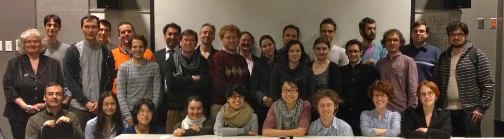

ELVIS and RA3 host a mini-conference
Posted by cmotuz on March 05, 2012
As spring has coyly come and harshly vanished again, the ELVIS project has started to show its first shoots. Right before the start of Reading Week, around 40 students and researchers assembled for a mini-conference hosted by CIRMMT’s Research Axis 3 (RA3). Specialists in Music Information Retrieval (MIR) congregated in Montreal to share their ideas and projects on Thursday and Friday February 16th and 17th, while Saturday morning was devoted to the ELVIS project.
The event began with a talk by J. Stephen Downie as part of CIRMMT’s Distinguished Lecture Series. His talk ranged from the broad question of whether MIR is part of science or part of musicology, to the nitty gritty details of adapting speech recognition technology to detect musical features. He also addressed one of the major criticisms by musicologists of technology - that the results of computer-operated queries (whether audio feature recognition or optical music recognition) will always be inaccurate. And not just inaccurate, but embarrassingly so, with obvious and inane errors littered throughout query results. Stephen Downie, however, made the interesting point that on his own chord recognition experiments, the two musicians who produced the analyses against which the computer’s results couple be tested could only claim 70% agreement between themselves. If 70% accuracy is all a computer needs to attain to keep up with a skilled (read: tired, overworked) musician, then there is no question it will be the way of the future.
The next day, CIRMMT hosted an entire afternoon of talks given by researchers from near and far. First and from furthest afield was Frauke Jürgensen, whose work with Humdrum has been previously mentioned in this blog. She began by asserting that the queries we put into music databases are not as disjoined from history as we might think. The very questions we ask tend to come from wanting to see if a musical feature claimed in a treatise (in her case of the 15th or 16th century) was actually to be found in a repertoire. She then went on to show us how certain sonorities were treated as consonances or dissonances within the fabric of a piece, shedding some light on at what point in history major thirds began to be tuned not in the bright, harsh, medieval way, but in the sweeter pure tuning used in the Renaissance.
George Tzanetakis then took up issues of tagging in popular music. A lot of good research has been done by seeing how the public classifies musical genres on the Internet, and there are many projects to get computers to identify these genres on their own. The dangers of crowd-sourced tagging include having to sort through a plethora of synonyms afterwards, sparseness in tagging, and a popular rather than crafted vocabulary, which he dubbed a “folksonomy” - a nice bit of vocabulary for my conference loot bag.
The next speaker was Michael Cuthbert, whose Music21 will, along with Humdrum, be one of the main toolkits for processing queries on the ELVIS corpus. His overview of what the project had accomplished and where it was going was an excellent introduction to the musicologists in the room who were interested but unfamiliar with Music21. He also highlighted some of the choices to be made in developing it further, in particular whether to devote resources to creating pre-programmed queries which can be applied to any musical corpus, or to making it infinitely expandable by making it easier to program queries. While the latter makes sense on an ideological level, the people with the queries tend to be musicologists, most of whom will not have the resources to program their own codes, so for whom a vat set of pre-fab possibilities might be more useful. It will be interesting to see what direction Music21 takes over the next few years when the ELVIS project will guarantee it heavy usage.
“What is a song, and how many do I have?” was the title of Thierry Bertin-Mahieux’s talk. The corpus he works with is called the “Million Song Dataset,” and it’s the largest corpus of audio that anyone has put together. This immense number of songs highlights many of the issues that come with managing large data sets. Just the question of matching up Artist and Title names to audio features raises issues: at what point are two different recordings of the same material the same song? What are the dangers of over-merging titles and artists which partially overlap, treating them as one category? How about under-merging, where a database sees no correlation whatever between “Bob Marley” and “Bob Marley and the Wailers”, classifying them as separate. One can abandon Aristotelian categories altogether and tag elements instead, but this brings us back to George Tzanetakis’ reminder that that’s not a simple issue either.
DDMAL’s own Ashley Burgoyne then gave us a quick tour of SALAMI and BILLBOARD, two relatively new datasets with chord and structure annotations waiting to be mined by keen scholars. He showed us how the songs had been labeled (the word “outro” for the way a song or section ends was another word for the loot bag), as well as how computers can convert audio features into graphical format in order to find similarities. Or, in some cases, how they can’t. But they’re working on it.
Ian Quinn treated the audience to a demo of his “interactive concordancer,” which uses Music21. He’s been using Music21 to ask questions about how music behaves, and especially if it behaves just the way theory textbooks say it does (and of course came across some interesting exceptions). He asserted a general theme that had started to prevail over the afternoon: that we mustn’t be afraid of the “dehumanizing” effect of technology. No, computers aren’t taking away the work of music theorists, just the bean counting. Rather, computers are letting humans open their minds to ask questions about music that they’d never dare ask before.
Christopher White followed by presenting the problem of making a musical “spellchecker”. Compared to the Roman alphabet and the vocabularies of modern languages, music is vaster and more complicated. He therefore raised the questions of how we simplify rules in order to make music “spellchecking” algorithms similar to those used in text.
Ichiro Fujinaga and Julie Cumming then did presentations on SIMSSA and on ELVIS, which are best sumarized by the pages surrounding this blog than here. Likewise with the presentations from the DDMAL lab the next morning, where diva, NEON, Gamera and other project-elements we’ve been working on (and all of which have dedicated blog posts) took the spotlight.
Both days finished with discussions, on Friday about the differences and relationship between audio and music notation, while Saturday’s round-table began to address the issues surrounding managing the large corpus that will be the ELVIS database. Since then, we’ve started collecting and McGill’s contribution is growing daily. Come back next week for a tour of how we’re putting this database together!
Here are the conference-goers gathered for a photo-op: 